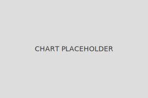

ROI Analysis Outputs
Explore the visual and quantitative outputs generated by the ProSynth ROI Framework.
ROI
--%
Utilization
--%
Timestamp
--
Utilization Trend
Static trend visualization for utilization over time.
Baseline vs Current
Visual comparison of baseline vs current performance metrics.
Performance Charts
Visual representation of synthesis efficiency, cost reduction, and projected ROI over time.
Sample Reports

Mockup of detailed ROI reports including key metrics, benchmarks, and recommendations.